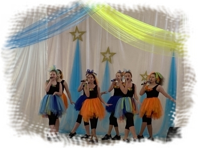

Добро пожаловать !
В мае месяце проводятся выпускные вечера для детей, окончивших дошкольное образовательное учреждение.
Наш центр

Наша история
Городской культурный центр «Эврика» — это место для традиционных встреч творческой интеллигенции, презентаций, выставок по изобразительному и декоративно-прикладному искусству, культурно-массовых, информационно-просветительских и спортивных программ.
Ежегодно коллектив центра «Эврика» организует и проводит городские мероприятия, конкурсы и фестивали.
Вокал
Вокально-хоровое творчество - руководитель, педагог дополнительного образования, Отличник народного образования РФ Иванова Галина Владимировна, первая квалификационная категория. Образование: средне – профессиональное, Читинское музыкальное училище. Дирижёрско – хоровое отделение. Дирижёр хора, учитель пения в школе, преподаватель сольфеджио в музыкальной школе. Педагогический стаж - 49 лет.
Мечтаете стать юным артистом? Вам интересно заниматься вокалом, осваивать азы хореографических и сценических искусства, исполнять эстрадные, народные, казачьи песни? Записывайтесь в музыкальную студию на программу "Вокальное творчество"! У нас - интересные занятия, большие праздничные концерты для родителей, выступления на фестивалях различного уровня (городского, областного, всероссийского и даже международного). Наши вокальные коллективы - любимцы публики не только города Усолье-Сибирское, мы покорили и юг нашей страны и даже столицу Китая - Пекин! Приходите, мы знаем, как научить петь! А главное, петь ХОРОШО!
